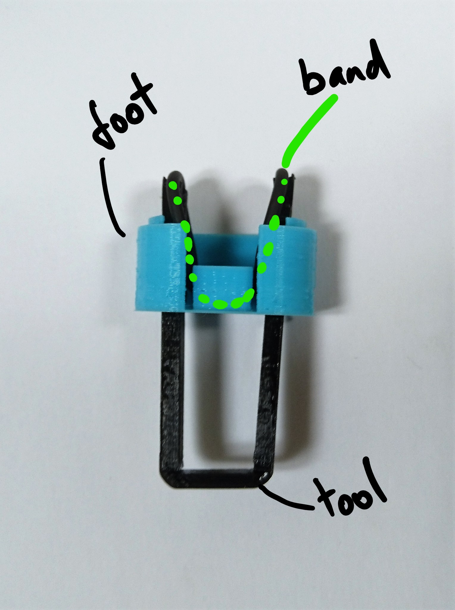
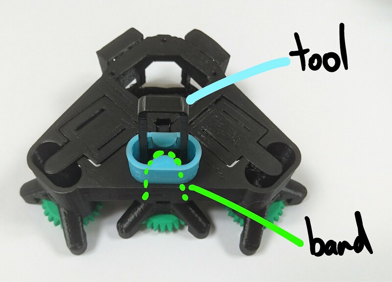
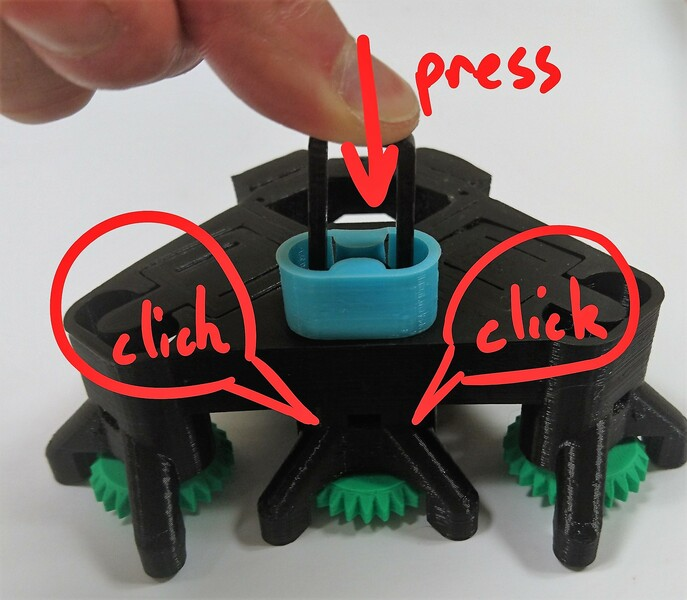
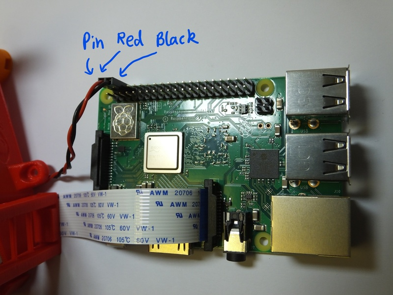
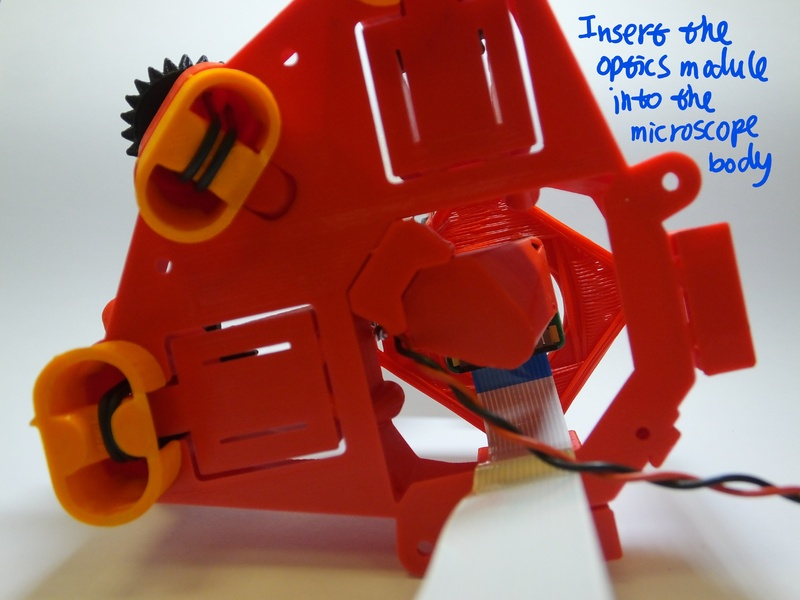
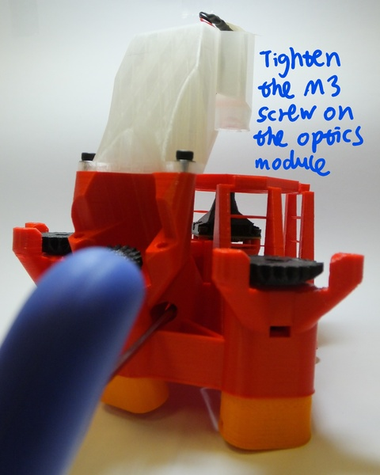

An actuator, based on an M3 screw, brass nut, and elastic bands, that can precisely and repeatably move a plastic flexure mechanism.
This assembly is used to actuate each of the three axes of the OpenFlexure Microscope stage. It consists of a plastic gear that fits onto an M3 screw, which then pulls up on a brass nut. Elastic bands pull down on the nut, tensioning the system. This confers two benefits: firstly, it allows us to actuate the flexure mechanism both up and down - doubling the travel - and secondly, it eliminates much of the backlash from the system.
All the parts you need for this step are in the picture below:
There are three actuator columns on the microscope, for X, Y, and Z. Follow these instructions for each column in turn.
We need to place a nut inside the actuator. Insert it from the side, through the slot in the actuator column, and push it into place with the nut insertion tool. Take care to insert the nut corner-first (i.e. with flat sides parallel to the tool), otherwise it will jam.
Next, take a screw, and push it into a plastic gear, so that the head of the screw is embedded in the plastic. Then, thread two washers onto the screw where it sticks out of the gear. Put a very small blob of light oil or grease (if available) on the screw thread. Put the screw into the hole at the top of the column, and screw it into the nut that is now inside the actuator. The two washers should sit between the gear and the microscope body


Turn the microscope over and, using the elastic band tool or a craft knife, snap the two thin plastic supports as shown if they are present. 
Hook one of the Viton bands over the elastic band tool, and pass the tool through the foot as shown. You should end up with one loop of elastic band passing over each fork-shaped end of the insertion tool. The flat side of the tool should be on the outside, so that the channels in either end face towards the centre of the foot. Make sure you pick the right foot - the middle axis (Z) has a smaller foot. The angle of the feet is different, if the foot doesn’t line up with the outside of the microscope casing, you may be using the wrong one.
You may find it easier to put the band through the foot, then insert the tool and hook the band over either end - either way you should end up with the band, foot, and tool arranged as shown in the pictures.
 
Place the foot on the body, taking care that it’s in the right place (the outer two actuators have sloping bottoms, but flat tops, the central Z axis has a sloping top and a flat bottom). You must also take care to put them on the right way round; the open part of the foot points towards the optics module in the centre of the microscope.
Push the insertion tool in until the band clicks into place. Use the nut insertion tool to hold the actuator in place while you do this. It might help to unscrew the gear a bit (so you can see some of the screw thread between the body and the gear) and push down on the gear. When you push the band in, it should click twice - once for each side. If you don’t manage to hook both sides on, you may need to completely remove the band and try again - a wooden skewer, or small flat-bladed screwdriver works well to unhook the band without damaging it.
What’s happening here is that the elastic band is pushed over little hooks inside the actuator column, near the top, and the click is the band popping into place. The band pulls down on the actuator, so after it’s in place the gear should turn with a little more resistance - this is important for the microscope to work properly.
  
You should now have the band pulling both sides of the actuator down as shown. 
Congratulations, you’ve assembled the actuator! There are three to do, so you may now need to go back and make the next one.
The simplest option for the microscope optics is to use a webcam lens. This is an old photographers’ trick, where a wide angle lens is turned backwards and used as a macro lens, so the side that would have pointed at the camera sensor now points at the sample. Because webcams have very small pixels, using a webcam in reverse makes quite a good microscope objective. This version of the optics module turns the Raspberry Pi camera into a microscope with a field of view about 400um across and a resolution of around 2um.
You will need the parts shown in the picture below:

First, get the necessary tools and parts: the optics module plastic parts (the lens spacer and the camera platform), the Raspberry Pi camera module, the tools for removing the camera lens, two M2 screws to secure the camera. Depending on print quality, you might also need a sharp craft knife or some tape.
NB the lens removal tools, board gripper, and optics module are all specific to the camera you’re using. This version of the instructions is for version 2 of the camera board, version 1 of the Rasbperry Pi camera module will also work, but you will need to remove the lens with pliers or tweezers instead. Version 2 of the camera module ships with a lens removal tool included, which is a white disc of plastic with a hole in the centre. This is better than the printed lens removal tool, if it’s available.
WARNING! The camera board is static sensitive. Take the usual anti-static precautions (ideally use an anti-static wristband connected to ground, but at the very least make sure you touch an earthed object, such as a metal pipe, before working on the camera module.
We need to remove the lens from the camera. To do this, you need the two plastic tools (the board gripper and the lens remover) as well as the camera module. 
Remove the protective film from the camera lens. 
There is a small ribbon cable connecting the camera to the PCB that is very easy to break. There is a square plastic jig that fits over the camera and PCB (the “camera board gripper”), which stops the camera twisting and damaging the ribbon cable. Fit this over the camera as shown. Note that the part for v2 of the camera board will sort-of fit v1, but you need to be a little more careful as it’s not a perfect fit.


Next, unscrew the lens from the camera module. Use the plastic tool to grip the lens module. This is a small circular part with four prongs that fits over the lens of the camera board (version 2 only) as shown. To remove the lens, push the removal tool onto the lens (just the top part, with the little plastic flanges) and turn anticlockwise to remove it.
The printed tool only works if the prongs are pointing anticlockwise, so make sure it’s the right way round. It’s important to use the board gripper to hold the camera chip in place and prevent damage to the delicate ribbon cable. After you’ve removed the lens, check that the little black or orange ribbon cable connecting the camera module (the black square of plastic from which you unscrewed the lens) to the PCB is still connected - pop it back in by pushing it with a finger if needed.
Once you’ve removed the lens, be sure to place the camera face down on the desk, or put a piece of tape over the square black lens holder; this will help stop dust settling on the sensor, which is extremely hard to clean.


Before assembling the parts into the holder, make sure it’s free from dust by blowing some air through it, and check there are no strings of plastic in the central hole through the mount.
Next, put the lens into the plastic extension tube. This should just push-fit, but may take a small amount of force, or require a layer of tape wrapped around the lens to make it fit tightly (depending on your printer). If you wrap tape around the lens, trim off any tape that protrudes above the lens with a scalpel or sharp craft knife. NB the lens should go in with the side that was next to the camera sensor on top, and the side that was facing outwards (the one with a small hole in the black plastic) facing into the extension tube.


Fit the extension tube onto the camera board, then put the camera board and extension tube onto the camera platform. Secure it in place with two M2 screws, which go through the extension tube and the camera board, and into the platform. You can use two more M2 screws if available to make the joint stronger.

Slide a nut into the nut trap on the side of the camera platform. This probably doesn’t need a tool, but you could use a 2.5mm hex key to push it in.

Screw the M3 screw into the nut, so that it sticks out the side of the camera platform. 
Well done - you have assembled the optics module.
The microscope usually works by looking at light that has passed through the sample - so we need to illuminate the sample from above. This section takes you through the assembly of the illumination arm.
To build the condenser, you will need the two parts of the mounting arm, two M3 screws and washers, the LED & cable. If you are using a condenser lens, you will also need the printed lens insertion tool to put the lens into the holder.
This is an optional step. If you are not using the condenser lens, skip to step 3
Place the condenser lens on the insertion tool (flat side down), and push the condenser housing down onto it. Take care to keep it vertical. You may need to push fairly hard. As with the tube lens in the optics module, check it’s flat and push again if necessary. 


Insert the LED into the condenser housing. It should push-fit and stay in place. It can be glued or taped if it doesn’t stay in. 
Assemble the cable for the LED, if you don’t have one soldered on already. You just need to be able to light it up - we usually do this by soldering the LED to a resistor (about 80 ohms), then attaching about 20cm of cable with female crimps on the end. This can easily be plugged onto the Raspberry Pi’s 5v GPIO pin.
Place the illumination dovetail onto the platform on the microscope body, and secure in place with the two M3 screws. Use a washer between the screw and the dovetail. The holes on the microscope should be just the right size for the M3 screw, but you might need to use some force to get the screws in. Be careful to stop turning the screws as soon as the dovetail is mounted tightly, though - otherwise you might damage the threads.

Clip the horizontal part of the condenser onto the vertical dovetail.

Neatly thread the cable for the LED through the gap between the condenser and the dovetail, and then down beside the optics module to the bottom of the microscope. Don’t pass it through the hole in the centre of the flat stage - pass it between the stage and the dovetail.
You have assembled the illumination - nearly there!
All the parts you need are shown below:

Plug the LED cable into the GPIO connector on the Raspberry Pi, to the 0v and 5v lines. These are the second and third pins from the top of the connector, on the outside edge - pins number 4 and 6.
Plug in the camera to the camera connector as described in the Raspberry Pi learning materials (the connector is next to the Ethernet port, and the contacts on the cable face the port, i.e. they face away from the tab on the plug).  
If you are using a tall optics module, e.g. if you are using a plan corrected objective, you may need to fit a sample riser between the microscope body and the microscope slide. This is not necessary if you are using the basic optics module.
Fit the optics module onto the microscope - it slides in from the bottom as shown. The screw sticking out the side fits into the “keyhole” shaped slot in the microscope body. 
Tighten the screw to hold the optics module in place. You can reach the screw with a ball-ended hex key, through the hole near the Z axis, as shown below: 
After this, there are only the sample clips to go. Exactly where you place these will depend on the samples you intend to use, but in any case you simply push the M3 screws into the clips, then screw down into the holes on the stage. 
Your microscope is now complete - happy observing! You might want to consult the camera module documentation or raspicam documentation if you need a hand setting up the camera.